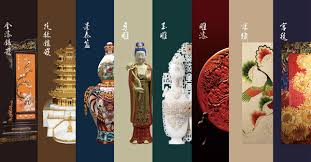

中华非遗
首页
非遗项目
北京非遗
江苏非遗
四川非遗
广东非遗
关于我们
传承千年文化
探索中华非物质文化遗产的魅力
了解更多

匠心传承
感受传统工艺的精湛技艺
探索项目
文化瑰宝
保护和传承珍贵的文化遗产
参与保护
❮
❯
特色非遗项目
京剧
中国传统戏曲艺术的瑰宝
了解详情
苏绣
江南刺绣艺术的代表
了解详情
川剧变脸
神秘莫测的传统技艺
了解详情
粤剧
岭南文化的艺术精华
了解详情
0
国家级项目
0
传承人
0
省份覆盖
0
年历史